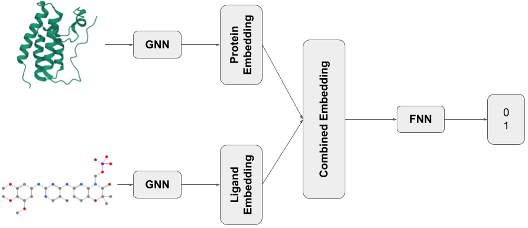
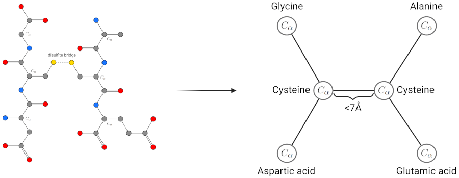
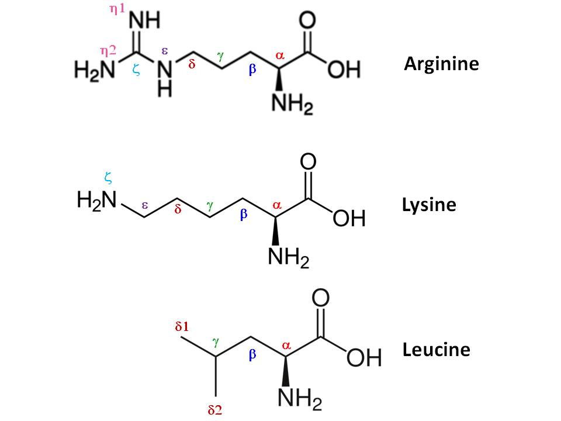
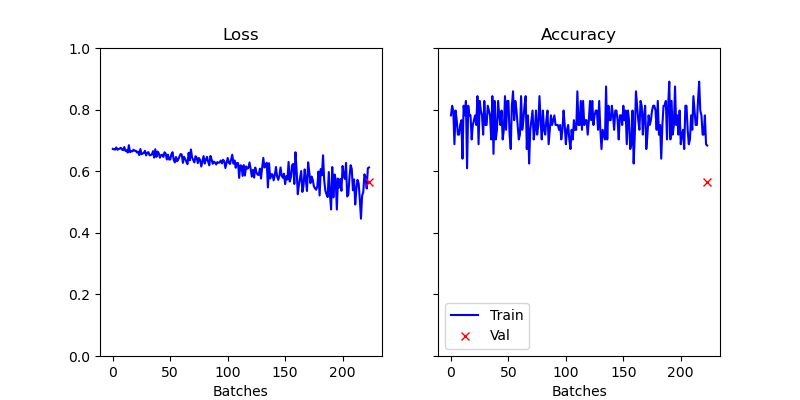

T038 · 蛋白质-配体相互作用预测¶
注： 本教程是 TeachOpenCADD 的一部分。TeachOpenCADD 是一个旨在教授领域专用技能，并提供可作为研究项目起点的流程模板的平台。
作者：
Roman Joeres, 2022, 药物生物信息学教席, UdS 和 HIPS, NextAID 项目, 萨尔大学
本教程的目标¶
本教程的目标是向读者介绍使用图神经网络（GNN）进行蛋白质-配体相互作用预测的领域。GNN 在向深度学习模型表示结构数据（如蛋白质和化学分子（配体））时特别有用。在本教程中，我们将展示如何训练一个深度学习模型来预测蛋白质和配体之间的相互作用。
理论 部分内容¶
蛋白质-配体相互作用预测的相关性
工作流程
生物学背景——蛋白质作为图
技术背景
图同构网络
二元交叉熵损失
实践 部分内容¶
计算图表示
配体到图
蛋白质到图
数据存储
数据点
数据集
数据模块
网络
GNN 编码器
完整模型
训练流程
参考文献¶
理论背景
图神经网络： Kipf, Welling: “Semi-Supervised Classification with Graph Convolutional Networks”, arXiv (2017) Bronstein, et al.: “Geometric deep learning: going beyond Euclidean data”, IEEE Signal Processing Magazine (2017), 4, 18-42
基于 GNN 的蛋白质-配体相互作用预测： Öztürk, et al.: “DeepDTA: Deep drug-target binding affinity prediction”, Bioinformatics (2018), 34, i821-i829 Nguyen, et. al.: “GraphDTA: Predicting drug-target binding affinity with graph neural networks”, Bioinformatics (2021), 37, 1140-1147
图同构网络： Xu, et al.: “How powerful are graph neural networks?”, arXiv (2018)
实践背景
[1]:
import sys
if "google.colab" in sys.modules:
%pip install teachopencadd --no-deps -q
!teachopencadd -d 38
%pip uninstall teachopencadd -y -q
%pip install -qr requirements.txt
理论¶
本教程结合了你在其他教程中看到的几个主题。在这里，我们将描述预测蛋白质和配体之间相互作用的一般思路。如果工作流程中使用的某些技术已在其他地方介绍过，我会链接到那里。否则，我将在下面解释新内容。
蛋白质-配体相互作用预测的相关性¶
蛋白质-配体相互作用在研究中受到关注的原因有很多，如 教程 T016 所示。药物发现是蛋白质-配体相互作用预测最重要的应用领域之一。在药物发现中，我们希望为给定的蛋白质找到一种新药。计算机辅助的相互作用预测有助于虚拟筛选的过程，在此过程中，许多可能的配体被_在计算机中_测试是否与某个靶标蛋白相互作用。传统上，针对靶标蛋白的潜在药物筛选是在实验室中完成的，候选药物被手动测试并按结合亲和力排序。结合亲和力是衡量两个分子之间相互作用强度的指标。结合亲和力越高，相互作用越强，两个分子结合得越好。
但手动研究候选药物既耗时又昂贵。用计算机预测结合事件要快得多、便宜得多。在本教程中，我们将专注于定性水平上预测蛋白质和配体之间的结合事件，即蛋白质和配体是否结合，亲和力暂时不是我们关注的。
模型架构¶
我们训练的输入是一个数据集，包含一组蛋白质和一组配体，以及一个包含每对蛋白质和配体结合信息的表格。我们将进行监督学习（如 教程 T022 所述），因此，我们将相互作用列表分为训练集、验证集和测试集。如上所述，我们将进行相互作用的二元分类，即一对蛋白质和分子是否相互作用？
我们网络架构的最后一个组件是一个简单的多层感知器（MLP），如 教程 T022 所述。另外两个组件是图神经网络（GNN），用于从数据集中每对蛋白质和配体中提取特征。如 教程 T035 所述，GNN 用于计算保持结构信息的图结构数据的表示。这些表示被拼接成一个向量，作为最终 MLP 的输入。

图 1： 本 notebook 中模型的可视化。所示示例结构取自 PDB 条目 ID 4O75（PDB 的介绍见 教程 T008）。
生物学背景——蛋白质作为图¶
这里，我们将专注于将蛋白质转换为图，因为 SMILES 到图的转换在 教程 T033 中已有解释。
在科学中，通常有两种表示蛋白质的方式。要么是通过其氨基酸序列，要么是作为 PDB 结构（如 教程 T008 中介绍的）。由于氨基酸序列不包含结构信息，我们使用蛋白质的 PDB 文件作为基于结构的模型的输入。在蛋白质的图表示中，图中的每个节点代表蛋白质中的一个氨基酸。如果所表示的两个氨基酸在特定距离内，则在节点之间绘制边。这相当于蛋白质中两个氨基酸之间的相互作用。为了计算两个氨基酸的距离，我们查看 PDB 文件中氨基酸的 \(C_\alpha\) 原子的坐标。如果两个 \(C_\alpha\) 原子之间的距离低于某个距离阈值，我们认为这些氨基酸相互作用，并在蛋白质的图表示中插入一条边。这可以在图 2 中看到。氨基酸中的原子是编号的。因此，氨基酸的 \(C_\alpha\) 原子是每个氨基酸中特定的碳原子，也存在于蛋白质的主链中。示例氨基酸中 \(C_\alpha\) 原子的例子可以在图 2 和图 3 中看到。

图 2： 将蛋白质结构作为图的过程和思想的可视化。在本例中，我们只考虑半胱氨酸的 \(C_\alpha\) 原子在 7 Å 的距离阈值内。由于两个半胱氨酸在空间上很接近，它们的硫产生了一个二硫桥，稳定了蛋白质的三维结构，这正是我们希望在图中表示的那种相互作用。

图 3： 三种示例氨基酸中碳原子的可视化。还显示了氨基酸中原子的其他编号，但对我们来说，只有 \(C_\alpha\) 原子是感兴趣的（来源）。
技术背景¶
在本节中，我们将重点讨论所提出解决方案的计算机科学方面。主要来说，我们将讨论具体的 GNN 架构以及我们使用哪些节点特征。为简单起见（并且因为它效果很好），我们将使用相同的网络架构来计算激酶及其配体的嵌入。
图同构网络¶
为了解决许多问题，已经提出了大量的 GNN 架构。如果你想了解最流行的架构概览，可以查看 PyTorch-Geometric 中实现的卷积层列表。在本教程中，我们将使用 GINConv 层作为 GNN 的主干架构，因为它们已被证明在嵌入分子数据方面很强大，同时保持功能易于理解。基于邻居计算节点嵌入的公式为：
其中 \(\mathcal{N}(i)\) 是节点 \(i\) 的邻居集合，\(\epsilon\) 是一个常数超参数，\(h_{\mathbf{\Theta}}\) 是一个神经网络，如 教程 T022 所述。其思想是聚合所有邻居嵌入以及自身的当前嵌入，并将其输入神经网络以提取关于节点及其邻居的信息。
如我们所见，GINConv 层在其计算中不使用边信息。因此，在将蛋白质和配体转换为图时，我们需要提取的唯一内容是节点的特征。在本教程中，我们将使用非常简单的特征化，每个节点只包含关于氨基酸类型或原子类型的类别信息。关于类别数据的独热编码的信息在 教程 T021 中介绍过。
我们 GNN 模块的最后一个元素是池化函数，用于基于最后一层中的节点嵌入来计算图嵌入。为简单起见（并且因为它出人意料地强大），我们使用均值池化！也就是说，我们只取最终 GINConv 层中所有节点嵌入的均值向量。
二元交叉熵损失（BCE Loss）¶
教程 T022 介绍了两个损失函数，即 MSE 和 MAE。两者都适合训练回归模型，但不适用于分类。对于分类，有大量的损失函数可供选择，我们将使用二元交叉熵损失。
计算损失的公式为：
其中 \(x\) 是一个样本的模型输出，\(y\) 是该样本的标签。
其思想是，\(y\) 和 \(1-y\) 中恰好有一个等于 1，因此公式对于正样本简化为 \(\log x\)，对于负样本简化为 \(\log (1-x)\)。通过这种设置，BCE 公式确保我们希望将预测值 \(x\) 推向负样本（\(y=0\)）的 0 和正样本（\(y=1\)）的 1。
对于我们的例子，正样本（\(y=1\)）是结合的激酶和配体对，那么 \(x\) 应接近 1。相应地，我们例子中的负样本（\(y=0\)）是不结合的激酶和配体对。注意公式开头的”-”，这将其余部分从最大化问题转化为最小化问题。
实践¶
在本实践部分，我们将讨论实现上述蛋白质-配体相互作用预测解决方案的每一步。我们将从所有需要的导入和一些路径定义开始。
[2]:
import math
import random
import os
from pathlib import Path
from rdkit import Chem
import torch
import torch.nn.functional as F
from torch import nn
from torch.optim import Adam
[3]:
from torch_geometric.nn import global_mean_pool, GINConv
from torch_geometric.data import Data, InMemoryDataset
from torch_geometric.loader import DataLoader
import matplotlib.pyplot as plt
from utils import kiba_preprocessing
/home/michael/.teachopencadd_envs/teachopencadd_T038_py312/lib/python3.12/site-packages/chembl_webresource_client/__init__.py:4: UserWarning: pkg_resources is deprecated as an API. See https://setuptools.pypa.io/en/latest/pkg_resources.html. The pkg_resources package is slated for removal as early as 2025-11-30. Refrain from using this package or pin to Setuptools<81.
__version__ = __import__('pkg_resources').get_distribution('chembl_webresource_client').version
[4]:
HERE = Path("./")
DATA = HERE / "data"
IMGS = HERE / "images"
# This method calls a data-preprocessing pipeline that is very technical and not of bigger interest for this talktorial.
# The method basically converts the KiBA dataset from an excel table to a dataset of structures in the format that we need.
kiba_preprocessing(DATA / "KIBA.csv", DATA / "resources")
KiBA originally contains 52498 ligands and 468 proteins.
KiBA after dropping sparse rows contains 79 ligands and 468 proteins.
KiBA finally contains 79 ligands and 373 proteins.
Preprocessing ligands
After ligand availability analysis KiBA contains 76 ligands and 373 proteins.
Preprocessing ligands finished
Preprocessing proteins
After protein availability analysis KiBA contains 76 ligands and 275 proteins.
Preprocessing proteins finished
Preprocessing interactions
Finally, KiBA comprises 20475 interactions.
Preprocessing interactions finished
计算图表示¶
配体到图¶
首先，我们将实现配体到图的转换。为便于理解，假设配体有 \(N\) 个原子。为了编码一个图，我们必须计算一个节点特征矩阵（一个 \(N \times F\) 矩阵，其中 \(F\) 是每个节点的特征数量）和一个由参与节点的 ID 对给出的边矩阵。
由于一些与 PyTorch Geometric 相关的实现细节，边矩阵必须具有 \(2 \times N\) 的格式。
[5]:
# 对于我们考虑的每种原子类型，将符号映射为用于独热编码的数值。
atoms_to_num = dict(
(atom, i) for i, atom in enumerate(["C", "N", "O", "F", "P", "S", "Cl", "Br", "I"])
)
def atom_to_onehot(atom):
"""
Return the one-hot encoding for an atom given its index in the atoms_to_num dict.
Parameters
----------
atom: str
Atomic symbol of the atom to represent
Returns
-------
torch.Tensor
A one-hot tensor encoding the atoms features.
"""
# initialize a 0-vector ...
one_hot = torch.zeros(len(atoms_to_num) + 1, dtype=torch.float)
# ... and set the according field to one, ...
if atom in atoms_to_num:
one_hot[atoms_to_num[atom]] = 1.0
# ... the last field is used to represent atom types that do not have their own field in the one-hot vector
else:
one_hot[len(atoms_to_num)] = 1.0
return one_hot
def smiles_to_graph(smiles):
"""
Convert a molecule given as SDF file into a graph.
Arguments
---------
smiles: str
Path to the file storing the structural information of the ligand
Returns
-------
Tuple[torch.Tensor, torch.Tensor]
A pair of node features and edges in the PyTorch Geometric format
"""
# read in the molecule from an SDF file
mol = Chem.MolFromSmiles(smiles)
atoms, bonds = [], []
# check if the molecule is valid
if mol is None:
print(smiles)
return None, None
# iterate over all atom, compute the feature vector and store them in a torch.Tensor object
for atom in mol.GetAtoms():
atoms.append(atom_to_onehot(atom.GetSymbol()))
atoms = torch.stack(atoms)
# iterate over all bonds in the molecule and store them in the PyTorch Geometric specific format in a torch.Tensor,
for bond in mol.GetBonds():
bonds.append((bond.GetBeginAtomIdx(), bond.GetEndAtomIdx()))
bonds.append((bond.GetEndAtomIdx(), bond.GetBeginAtomIdx()))
bonds = torch.tensor(bonds, dtype=torch.long).T
return atoms, bonds
蛋白质到图¶
类似于我们将配体转换为图的方式，我们将蛋白质转换为图。输出将是相同的：一对节点特征和边。要获得更多关于 PDB 格式的信息，请阅读这篇文章。
[6]:
# 生成氨基酸到数字的映射，用于独热编码
aa_to_num = dict(
(aa, i)
for i, aa in enumerate(
[
"ALA",
"ARG",
"ASN",
"ASP",
"CYS",
"GLU",
"GLN",
"GLY",
"HIS",
"ILE",
"LEU",
"LYS",
"MET",
"PHE",
"PRO",
"SER",
"THR",
"TRP",
"TYR",
"VAL",
"UNK",
]
)
)
def aa_to_onehot(aa):
"""
Compute the one-hot vector for an amino acid representing node.
Arguments
---------
aa: str
The three-letter code of the amino acid to be represented
Returns
-------
torch.Tensor
A one-hot tensor encoding the atoms features.
"""
one_hot = torch.zeros(len(aa_to_num), dtype=torch.float)
one_hot[aa_to_num[aa]] = 1.0
return one_hot
def pdb_to_graph(pdb_file_path, max_dist=7.0):
"""
Extract a graph representation of a protein from the PDB file.
Arguments
---------
pdb_file_path: str
Filepath of the PDB file containing structural information on the protein
max_dist: float
Distance threshold to apply when computing edges between amino acids
Returns
-------
Tuple[torch.Tensor, torch.Tensor]
A pair of node features and edges in the PyTorch Geometric format
"""
# read in the PDB file by looking for the Calpha atoms and extract their amino acid and coordinates based on the positioning in the PDB file
residues = []
with open(pdb_file_path, "r") as protein:
for line in protein:
if line.startswith("ATOM") and line[12:16].strip() == "CA":
residues.append(
(
line[17:20].strip(),
float(line[30:38].strip()),
float(line[38:46].strip()),
float(line[46:54].strip()),
)
)
# Finally compute the node features based on the amino acids in the protein
node_feat = torch.stack([aa_to_onehot(res[0]) for res in residues])
# compute the edges of the protein by iterating over all pairs of amino acids and computing their distance
edges = []
for i in range(len(residues)):
res = residues[i]
for j in range(i + 1, len(residues)):
tmp = residues[j]
if math.dist(res[1:4], tmp[1:4]) <= max_dist:
edges.append((i, j))
edges.append((j, i))
# store the edges in the PyTorch Geometric format
edges = torch.tensor(edges, dtype=torch.long).T
return node_feat, edges
数据存储¶
在蛋白质-配体相互作用预测中，为我们的神经网络存储和表示输入数据与其他神经网络有些不同。因此，我们必须定义自己的类来表示数据。与 教程 T008 中训练 MLP 的主要区别在于，除了输入是图之外，我们还有两个数据点作为输入：蛋白质的图和配体的图。因此，我们需要实现自己的数据基础设施。
数据点¶
通常，PyTorch Geometric 内置的 Data 类只用于表示一个图。对于我们的任务，数据包含两个图，因此我们需要调整计算一个数据点中节点和边数量的功能。
[7]:
class DTIDataPair(Data):
def __init__(self, **kwargs):
super().__init__(**kwargs)
@property
def num_nodes(self):
return self["lig_x"].size(0) + self["prot_x"].size(0)
@property
def num_edges(self):
return self["lig_edge_index"].size(1) + self["prot_edge_index"].size(1)
def __inc__(self, key, value, *args, **kwargs):
"""
Method that is necessary to overwrite for successful batching of DTIDataPair object.
In case of interest, one can look at this explanation:
https://pytorch-geometric.readthedocs.io/en/latest/notes/batching.html
When multiple samples are sent through a network at once, they are aggregated into batches.
In PyTorch Geometric this is done by copying all n graphs for one batch into one graph with
n connected components. Because of this, the node ids in the edge_index objects have to be
changed. As they have to be increased by a fixed offset based on the number of nodes in the
batch so far, this method computes this offset in case the edge_indices of either the
proteins or ligands.
Arguments
---------
key: str
String name of the field of this class to increment while batching
Returns
-------
torch.Tensor
A one-element tensor describing how to modify the values when batching.
"""
if not key.endswith("edge_index"):
return super().__inc__(key, value, *args, **kwargs)
lenedg = len("edge_index")
prefix = key[:-lenedg]
return self[prefix + "x"].size(0)
数据集¶
这是真正数据魔力的所在。在数据集中，我们读取数据点并将其处理成我们想要的图表示。
[8]:
class DTIDataset(InMemoryDataset):
def __init__(self, folder_name, file_index):
self.folder_name = folder_name
super().__init__(root=folder_name)
self.data, self.slices = torch.load(self.processed_paths[file_index], weights_only=False)
@property
def processed_file_names(self):
"""
Just store the names of the files where the training split, validation split, and test split are stored.
Returns
-------
List[str]
A list of filenames where the preprocessed data is stored to not recompute the preprocessing every time.
"""
return ["train.pt", "val.pt", "test.pt"]
def process(self):
"""
This function is called internally in the preprocessing routine of PyTorch Geometric and defined how the dataset of PDB files, ligands, and an interaction table is converted into a dataset of graphs, ready for deep learning.
"""
# compute all ligand graphs and store them as a dictionary with their names as key and the graphs as values
ligand_graphs = dict()
with open(Path(self.folder_name) / "tables" / "ligands.tsv", "r") as data:
for line in data.readlines()[1:]:
chembl_id, smiles = line.strip().split("\t")[:2]
ligand_graphs[chembl_id] = smiles_to_graph(smiles)
# compute all protein graphs and store them as a dictionary with their names as key and the graphs as values
protein_graphs = dict(
[
(filename[:-4], pdb_to_graph(Path(self.folder_name) / "proteins" / filename))
for filename in os.listdir(Path(self.folder_name) / "proteins")
]
)
with open(Path(self.folder_name) / "tables" / "inter.tsv") as inter:
data_list = []
for line in inter.readlines()[1:]:
# read a line with one interaction sample. Extract ligand and protein ID and get their graphs from the dictionaries above
protein, ligand, y = line.strip().split("\t")
lig_node_feat, lig_edge_index = ligand_graphs[ligand]
prot_node_feat, prot_edge_index = protein_graphs[protein]
# if either ligand or protein are invalid graphs, skip this sample ...
if lig_node_feat is None or prot_node_feat is None:
print(line.strip())
continue
# ... otherwise, create a datapoint using the class from above
data_list.append(
DTIDataPair(
lig_x=lig_node_feat,
lig_edge_index=lig_edge_index,
prot_x=prot_node_feat,
prot_edge_index=prot_edge_index,
y=torch.tensor(float(y), dtype=torch.float),
)
)
# shuffle the data, and compute how many samples go into which split
random.shuffle(data_list)
train_frac = int(len(data_list) * 0.7)
test_frac = int(len(data_list) * 0.1)
# then split the data and store them for later reuse without running the preprocessing pipeline
train_data, train_slices = self.collate(data_list[:train_frac])
torch.save((train_data, train_slices), self.processed_paths[0])
val_data, val_slices = self.collate(data_list[train_frac:-test_frac])
torch.save((val_data, val_slices), self.processed_paths[1])
test_data, test_slices = self.collate(data_list[-test_frac:])
torch.save((test_data, test_slices), self.processed_paths[2])
数据模块¶
这只是一个方便的类，包含数据集的所有三个拆分，并为训练、验证和测试集提供数据加载器。
[9]:
class DTIDataModule:
def __init__(self, folder_name):
self.train = DTIDataset(folder_name, 0)
self.val = DTIDataset(folder_name, 1)
self.test = DTIDataset(folder_name, 2)
def train_dataloader(self):
"""
Create and return a dataloader for the training dataset.
Returns
-------
torch_geometric.loaders.DataLoader
Dataloader on the training dataset
"""
return DataLoader(
self.train, batch_size=64, shuffle=True, follow_batch=["prot_x", "lig_x"]
)
def val_dataloader(self):
"""
Create and return a dataloader for the validation dataset.
Returns
-------
torch_geometric.loaders.DataLoader
Dataloader on the validation dataset
"""
return DataLoader(self.val, batch_size=64, shuffle=True, follow_batch=["prot_x", "lig_x"])
def test_dataloader(self):
"""
Create and return a dataloader for the test dataset.
Returns
-------
torch_geometric.loaders.DataLoader
Dataloader on the test dataset
"""
return DataLoader(self.test, batch_size=64, shuffle=True, follow_batch=["prot_x", "lig_x"])
网络¶
这里，我们将按照理论部分定义的内容实现网络。
GNN 编码器¶
首先，GNN 编码器，我们将用于嵌入蛋白质和配体。
[10]:
class Encoding(torch.nn.Module):
def __init__(self, input_dim, hidden_dim=128, output_dim=64, num_layers=3):
"""
使用一层 GINConv 层进行编码以嵌入结构数据。
Arguments
---------
input_dim: int
Size of the feature vector of the data
hidden_dim: int
Number of hidden neurons to use when computing the embeddings
output_dim: int
Size of the output vector of the final graph embedding after a final mean pooling
num_layers: int
Number of layers to use when computing embedding. This includes input and output layers, so values below 3 are meaningless.
"""
super().__init__()
self.layers = (
[
# define the input layer
GINConv(
nn.Sequential(
nn.Linear(input_dim, hidden_dim),
nn.PReLU(),
nn.Linear(hidden_dim, hidden_dim),
nn.BatchNorm1d(hidden_dim),
)
)
]
+ [
# define a number of hidden layers
GINConv(
nn.Sequential(
nn.Linear(hidden_dim, hidden_dim),
nn.PReLU(),
nn.Linear(hidden_dim, hidden_dim),
nn.BatchNorm1d(hidden_dim),
)
)
for _ in range(num_layers - 2)
]
+ [
# define the output layer
GINConv(
nn.Sequential(
nn.Linear(hidden_dim, hidden_dim),
nn.PReLU(),
nn.Linear(hidden_dim, output_dim),
nn.BatchNorm1d(output_dim),
)
)
]
)
def forward(self, x, edge_index, batch):
"""
Forward a batch of samples through this network to compute the forward pass.
Arguments
---------
x: torch.Tensor
feature matrices of the graphs forwarded through the network
edge_index: torch.Tensor
edge indices of the graphs forwarded through the network
batch: torch.Tensor
Some internally used information, not relevant for the topic of this talktorial
"""
for layer in self.layers:
x = layer(x=x, edge_index=edge_index)
pool = global_mean_pool(x, batch)
return F.normalize(pool, dim=1)
完整模型¶
根据理论部分提出的工作流程定义完整模型。
[11]:
class DTINetwork(torch.nn.Module):
def __init__(self):
super().__init__()
# 为蛋白质和配体创建编码器
self.prot_encoder = Encoding(21)
self.lig_encoder = Encoding(10)
# 定义一个简单的前馈神经网络来计算最终预测（结合或不结合）
self.combine = torch.nn.Sequential(
torch.nn.Linear(128, 256),
torch.nn.ReLU(),
torch.nn.Dropout(0.2),
torch.nn.Linear(256, 64),
torch.nn.ReLU(),
torch.nn.Dropout(0.2),
torch.nn.Linear(64, 1),
torch.nn.Sigmoid(),
)
def forward(self, data):
"""
Define the standard forward process of this network.
Arguments
---------
data: DTIDataPairBatch
A batch of DTIDataPair samples to be predicted to train on them
Returns
-------
Prediction values for all pairs in the input batch
"""
# compute the protein embeddings using the protein embedder on the protein data of the batch
prot_embed = self.prot_encoder(
x=data.prot_x,
edge_index=data.prot_edge_index,
batch=data.prot_x_batch,
)
# compute the ligand embeddings using the ligand embedder on the ligand data of the batch
lig_embed = self.lig_encoder(
x=data.lig_x,
edge_index=data.lig_edge_index,
batch=data.lig_x_batch,
)
# concatenate both embeddings and return the output of the FNN
combined = torch.cat((prot_embed, lig_embed), dim=1)
return self.combine(combined)
训练流程¶
在训练中，我们将使用 Adam 优化器（这是一个标准选择）。如上所述，我们使用 BCE 损失函数来计算模型预测的偏差。该设置的一个特殊之处在于我们只训练一个 epoch。这是因为只有在第一个 epoch 中模型才显示出改进。之后，模型已经学习了数据集，不会有太大改进。但你可以自由地测试更多的 epoch。平均而言，一个 epoch 大约需要 10 分钟才能完成。
[12]:
def train(num_epochs=1):
"""
实际训练流程的实现。
Arguments
---------
num_epochs: int
训练模型的 epoch 数量
"""
# 加载数据、模型，并定义损失函数
dataset = DTIDataModule(DATA / "resources")
model = DTINetwork()
loss_fn = torch.nn.BCELoss()
optimizer = Adam(model.parameters(), lr=0.0001)
epoch_train_acc, epoch_train_loss, epoch_val_acc, epoch_val_loss = [], [], [], []
# train for num_epochs
for e in range(num_epochs):
print(f"Epoch {e + 1}/{num_epochs}")
# perform the actual training
train_loader = dataset.train_dataloader()
for b, data in enumerate(train_loader):
# compute the models predictions and the loss
pred = model.forward(data).squeeze()
loss = loss_fn(pred, data.y.squeeze())
# perform one step of backpropagation
optimizer.zero_grad()
loss.backward()
optimizer.step()
# report some statistics on the training batch
pred = pred > 0.5
epoch_train_acc.append(sum(pred == data.y) / len(pred))
epoch_train_loss.append(loss.item())
print(
f"\rTraining step {(b + 1)}/{len(train_loader)}: Loss: {epoch_train_loss[-1]:.5f}\tAcc: {epoch_train_acc[-1]:.5f}",
end="",
)
torch.save(model.state_dict(), DATA / f"model_{e + 1}.pth")
# perform validation of the last training epoch
val_loader = dataset.val_dataloader()
for b, data in enumerate(val_loader):
# compute the models predictions and the loss
pred = model.forward(data).squeeze()
loss = loss_fn(pred, data.y.squeeze())
# report some statistics on the validation batch
pred = pred > 0.5
epoch_val_acc.append(sum(pred == data.y) / len(pred))
epoch_val_loss.append(loss.item())
print(
f"\rValidation step {(b + 1)}/{len(val_loader)}: Loss: {epoch_val_loss[-1]:.5f}\tAcc: {epoch_val_acc[-1]:.5f}",
end="",
)
# test the final model
print()
test_loss, test_acc = [], []
test_loader = dataset.test_dataloader()
for b, data in enumerate(test_loader):
# compute the models predictions and the loss
pred = model.forward(data).squeeze()
loss = loss_fn(pred, data.y.squeeze())
# report some statistics on the validation batch
pred = pred > 0.5
test_acc.append(sum(pred == data.y) / len(pred))
test_loss.append(loss.item())
print(f"\rTesting Loss: {test_loss[-1]:.5f}\tAcc: {test_acc[-1]:.5f}", end="")
print(
f"\rTesting: Loss: {(sum(test_loss) / len(test_loss)):.5f}\tAcc: {(sum(test_acc) / len(test_acc)):.5f}"
)
fig, ax = plt.subplots(1, 2, figsize=(8, 4), sharey=True)
ax[0].plot(epoch_train_loss, c="b", label="Train")
ax[0].plot(
len(epoch_train_loss) - 1, sum(epoch_val_loss) / len(epoch_val_loss), "rx", label="Val"
)
ax[0].set_ylim([0, 1])
ax[0].set(xlabel="Batches")
ax[0].set_title("Loss")
ax[1].plot(epoch_train_acc, c="b", label="Train")
ax[1].plot(
len(epoch_train_loss) - 1, sum(epoch_val_loss) / len(epoch_val_loss), "rx", label="Val"
)
ax[1].set_ylim([0, 1])
ax[1].set(xlabel="Batches")
ax[1].set_title("Accuracy")
plt.legend()
plt.savefig(IMGS / "train_perf.png")
plt.clf()
return model
[13]:
!ls data/resources/processed
pre_filter.pt pre_transform.pt test.pt train.pt val.pt
/home/michael/.local/share/uv/python/cpython-3.12.8-linux-x86_64-gnu/lib/python3.12/pty.py:95: DeprecationWarning: This process (pid=33633) is multi-threaded, use of forkpty() may lead to deadlocks in the child.
pid, fd = os.forkpty()

图 4： 训练第一个 epoch 的结果可视化。
讨论¶
如图 3 所示，损失略有下降，而准确率则停滞不前。蛋白质-配体相互作用预测是一个非常相关且极其复杂的领域。由于蛋白质和配体之间结合的复杂性，例如配体的哪些原子结合到蛋白质的哪个位点，很难训练一个简单的模型来预测这些相互作用。在本教程中，我们讨论了一个概念验证，本教程开头引用的文献对该概念进行了进一步研究。
测验¶
通过本测验，你可以测试是否理解本教程的重要知识点。
为什么我们使用结构数据而不是氨基酸序列和 SMILES 字符串？
我们如何将蛋白质转换为图？我们为此使用的蛋白质的基本部分是什么？
困难题：为什么我们需要实现自己的类来表示数据点？